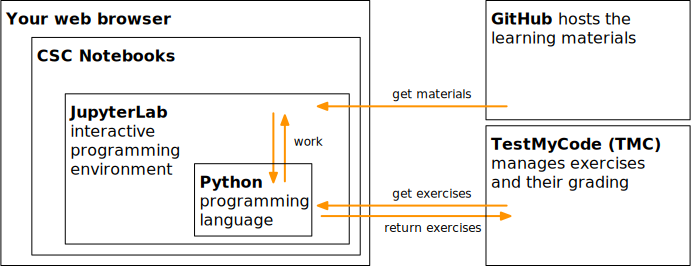

Getting started
Contents
Getting started#
Please work through this section to get started with the MOOC.
An overview of the learning environments#
This MOOC uses several learning environments, which are directly accessible through your web browser.
GitHub is a service for storing code, documentation and other materials. The learning materials and this website are hosted on GitHub.
CSC Notebooks is a cloud service provided by CSC – IT Center for Science, a Finnish non-profit state enterprise. CSC Notebooks are used for running JupyterLab, which provides access to the interactive learning materials and the Python programming language.
TestMyCode is a programming assignment evaluator developed by the Agile Education Research group at the University of Helsinki. This MOOC uses TMC to download and automatically grade the course exercises and final examination.
The following diagram provides an overview of the environments and services used in this MOOC.
How to use the learning environments in practice?#
To get started, please follow the steps below.


{kind=link}